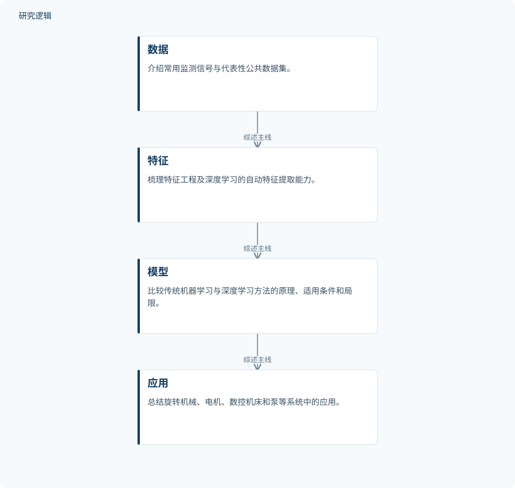

摘要解读
基于机器学习的机械设备故障诊断研究进展
Research Progress in Machine-Learning-Based Fault Diagnosis for Mechanical Equipment
解读更新 2026-11-10 18:15 · 依据公开摘要整理，未核验全文细节
机械设备故障诊断面临的难题，正从如何识别故障，延伸到如何在标注有限、工况变化的工业现场可靠运行。这篇综述沿“数据—特征—模型—应用”梳理机器学习方法，其阅读价值在于把算法进展与工程落地瓶颈放在同一框架下考察。
文章目录
监测数据增长，为何仍难支撑可靠诊断？
故障诊断关系到机械设备的安全可靠运行，也关系到非计划停机造成的损失。随着传感器与工业物联网大规模部署，状态监测数据的规模和维度迅速增长，依赖人工经验与信号处理的传统诊断方式越来越难以应对。
摘要将机器学习，尤其是深度学习成为主要研究范式，归因于自动特征提取与非线性建模能力。但这篇综述并未把讨论停留在模型能力上，而是进一步关注这些方法进入真实工业环境时的适用条件。
沿数据、特征、模型与应用组织综述
这是一篇研究进展综述，而非摘要中报告了某个新诊断模型的实验论文。作者先梳理诊断基本流程、常用监测信号和代表性公开数据集，再比较不同方法的原理、适用条件、优势与局限。
方法覆盖特征工程、支持向量机和集成学习，以及卷积神经网络、循环神经网络、自编码器、注意力机制与Transformer。面向工业场景，综述还讨论少样本学习、迁移学习、多传感器融合与图神经网络、联邦学习，以及基于生成对抗网络的数据增强。
依据摘要整理的综述结构示意


仅概括摘要明确陈述的综述展开顺序，不代表实验流程，也不是论文原图。
下载 SVG图示关系说明
实线表示相邻阶段的信息流，虚线表示跨阶段联系或反馈。
诊断流程与数据基础 → 传统与深度学习方法：继而评述方法；传统与深度学习方法 → 工业方向与设备应用：转向工业场景；工业方向与设备应用 → 落地挑战与未来趋势：总结挑战与趋势
关注点从大量标注转向跨工况与可部署
摘要给出的核心判断是：该领域正从依赖大量标注数据的判别式诊断，转向少样本、跨工况、可解释且可部署的解决方案。这里报告的是作者对研究趋势的综合判断，不能据此认定某一种方法已经全面优于其他方法。
综述涉及旋转机械、电机、数控机床和泵等系统。作者从数据质量、模型泛化、可解释性与实时边缘部署分析挑战，并判断数据治理和工程实施将成为实际应用的主要瓶颈；物理与数据融合、基础模型及智能运维则属于文中讨论的未来趋势。
摘要无法回答哪些比较与验证问题？
本解读仅依据完整摘要。摘要未交代文献检索与筛选范围、纳入研究数量，也未列出具体数据集、样本规模、评价指标及统一比较条件，因此无法判断不同方法的性能差距，或其结论覆盖哪些设备与工况。
摘要也未提供工业现场验证、跨工况测试或边缘部署的具体结果，不能把讨论过的应用方向视为已验证的工程效果。这些信息在摘要中缺失，并不意味着论文正文没有涉及。
阅读启发：追问模型能力如何对应现场约束
阅读启发：后续阅读可围绕少样本、跨工况、可解释与可部署这些目标，查看综述分别援引了什么证据，又如何界定各类方法的适用边界。对智能运维读者而言，比单看模型名称更值得追问的是：数据治理和工程实施具体限制了哪些诊断环节？
以上为本站阅读启发与建议，不是论文已验证的结论。